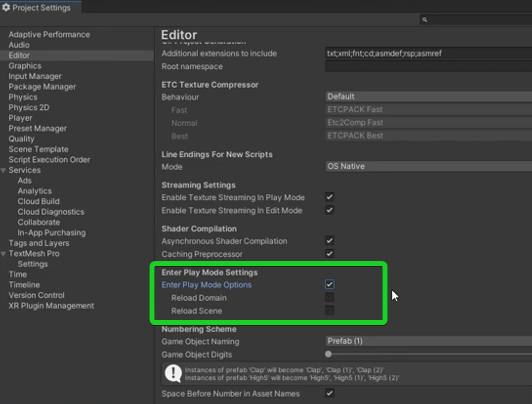

Rychlejší spuštění

Reload Domain
Když je tato možnost povolena, všechny skripty se znovu načtou, což může trvat déle, ale zajišťuje, že se všechny změny v kódu projeví.
Reload Scene
Když je tato možnost povolena, Unity znovu načte aktuální scénu, což může být užitečné, pokud chceš začít s "čistým" stavem.
Pokud tyto možnosti zakážeš, můžeš zrychlit vstup do režimu hry, protože Unity se vyhne některým časově náročným procesům.